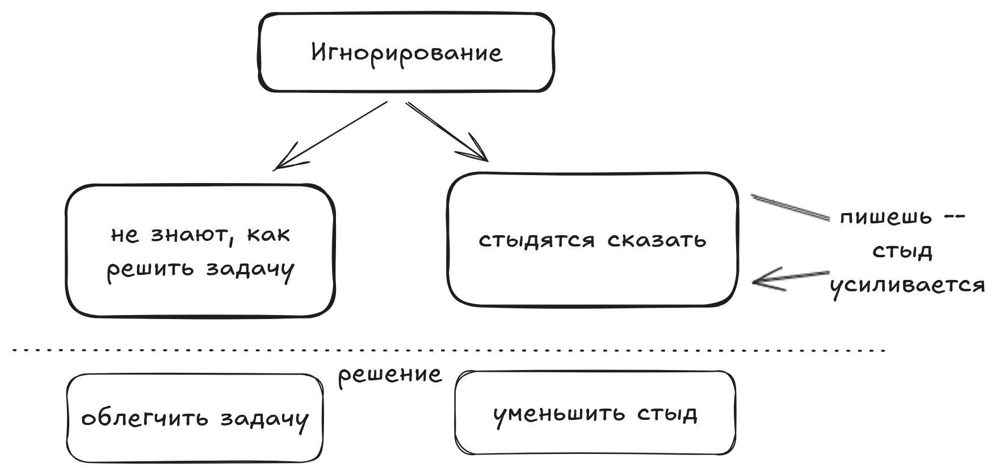

Короче я не знаю, что делать с человеком, который у тебя “как бы” в подчинении, но который пропал и игнорирует. А эта статья — подвижки в размышлении на тему и повод спросить вас: “а как вы поступаете”?.
Контекст: руководство в студенческих отрядах
Несколько лет руководил студенческими археологическими отрядами в Москве. Активность там — штука добровольная. Хочешь придумать мероприятие или вести группу? Конечно, мы очень рады! Взялся и перестал? Ну… грустненько((
У меня не было особых рычагов для давления на людей, которые начинали меня игнорировать. А у них была незакрытая сессия и всё такое — весомые причины сливаться.
На прошлой недели мы общались с девушкой из моего отряда. Она поделилась той же проблемой: что делать, если тебя игнорируют твои “подчинённые” когда само то, что они подчинённые вилами по воде писано.
Итак, что делать, когда тебя игнорируют как будто бы и подчинённые, но у тебя нет хороших рычагов? Я не могу дать исчерпывающий ответ. Такой что “делай раз-два-три” и всё станет отлично, человек вернётся и начнёт работать. У меня было несколько случаев, когда ничего не помогало и мы просто расставались. Хотя было и когда всё получалось. Из них и появляется мой опыт.
Причины игнора
Мы игнорируем, потому что не знаем как сделать задачу и не знаем, как об этом сказать, стыдимся.
- Сделай мы задачу, к чему игнор: вот результаты, мы молодцы.
- Имей план по задаче, его можно просто сказать: сделаем тогда-то, всё чётко, игнор не имеет смысла
- Не знаем, как делать, боимся, сомневаемся — вот это уже почва для игнорирования. Мы не будем писать, потому что написать = признать, что мы не справились. А разве мы можем да не справиться? Просто времени не было, вот завтра то обязательно!
- Дополнительно нам ведь уже 5 раз написали спросили. И мы всё время говорили “да, всё будет”. Что получается, мы человеку врали? Не ответили неделю назад, как договаривались? Лучше не писать. Пока не пишешь вроде как всё и хорошо
Следствие.
Облегчить задачу и снизить социальное давление — вот два способа борьбы с игнорированием. Собственно в решении боремся с причинами. При этом “Облегчить задачу” — тема всего блога про продуктивность хД. Если бы мы могли всегда облегчать задачу достаточно для действий, мы бы и сами были ого-го!. Поэтому все варианты обговорить не получится, но вот некоторые самые важные.
Решения
Напомни
- Проблема: человек пропал и не пишет когда вы договорились.
- Решение: напомни. Конечно, если человек вообще игнорщик это не поможет. Но вы удивитесь, как часто люди радуются напоминаниям. И ни разу не было, чтобы меня с ними послали.
Хей, моё сообщение с пятницы не потерялось ли среди других переписок?
Обговори на берегу точки контроля
- Проблема: Когда ты пишешь человеку с напоминанием, он думает: “так, мне пишут потому что я не очень”.
- Решение: заранее договориться, когда ты спросишь про работу. Теперь для человека ты пишешь не потому что “блин, он подозревает, что я не очень”, а ты пишешь “потому что мы так договорились”
Тебе надо сделать игру через 2 недели. Но для моего спокойствия, давай спишемся через неделю и через 10 дней, расскажешь как продвигается?
Ориентируй на процесс
- Проблема: Если вы договорились списаться в 3 точках, но к этому времени что-то должно быть сделано, человек чувствует напряжение: “блин, я обещал что сделаю, а не сделал”. Игнор.
- Решение: акцентируй что понимание процесса и состояния дел тебе важнее результата.
…давай спишемся через 10 дней,… Ничего страшного, если ты ещё не начнёшь делать. Мне важнее понимать, как у тебя дела
Снизь чувство стыда
- Проблема: когда человек не отвечает, каждый следующий запрос усугубляет чувство стыда. Теперь он чувствует себя плохо не только за несделанную задачу, но и за неотвеченные сообщения.
- Решение: учитывать этот контекст. Проговорить его и помочь унять
…Ничего страшного, если ты ещё только планируешь задачу и из-за этого тебе было сложно отвечать. Но буду рад просто поговорить и понять, как ты
Снизь сложность задачи
- Проблема: сама задача-то может быть плёвая. Но человек загнался и всё, уже не может с ней справиться. Просто не видит из-за эмоций решение
- Решение: помочь ему. Например, ограничь задачу подзадачей. Или акцентируй внимание на том, сколько усилий она займёт
Хочу предложить тебе сделать не всю задачу, а самую важную часть. <..>. Займёт минут 15 времени. Что ты об этом думаешь?
Помоги провалиться
- Проблема: вообще-то может быть и нормально, что человек что-то не может сделать. Всякое ж бывает. У тебя может быть кто-то на подстраховку, ты сам можешь помочь… Вот только тебе нужно понимать, а сделает ли человек в итоге или таки надо использовать запасной вариант.
- Решение: уменьши прессинг, но поставь несдвигаемый дедлайн. Попроси к нему ответить и скажи, что если что к этому времени попросишь другого.
Привет. Сможешь соориентировать к понедельнику? Я понимаю, что у тебя сейчас трудности, так что если к понедельнику решишь отказаться от задачи у меня будет достаточно времени её перепоручить. Просто возьмёшь новую, когда будут силы
Опиши алгоритм своего поведения
- Проблема: нам тоже нелегко! Это ж нас человек игнорирует, мы не знаем что с ним делать.
- Решение: описать алгоритм своих действий при разных вводных. До какого числа будете ждать? Что сделаете, если не дождётесь? Как вам будет комфортно? Если вы напишите его для себя — вам будет проще действовать. Если вы покажете его игнорирующему, вы сформулируете ему рамки работы, что тоже поможет, снизит неопределённость
… если к понедельнику не будет понятно, я попрошу решить задачу другому. А к тебе вернусь тогда через неделю с новым предложением
Зови на созвон/встречу
- Проблема: человек игнорирует по переписке, по переписке ему сложнее принять решение.
- Решение: зовите на встречу или, хотя бы, на созвон. На встрече проще решить проблему, на встрече проще обсудить алгоритм действий
Давай созвонимся?)
Не считай, что человек изменится
- Проблема: человек (если ему стыдно) хочет измениться и будет убеждать вас, что изменится. Но он не изменится. В плане он действительно постарается, у него может что-то получится, со временем получится даже хорошо. Но нельзя на это рассчитывать. Нельзя рассчитывать, что даже с большим желанием игнорщик перестанет игнорировать тогда, когда снова будет не понимать что делать. А если к этому моменту он уже пообещал что исправится — стыда будет ещё больше.
- Решение: поощряйте стремление измениться, но не рассчитывайте на него. Обсуждайте не “как будет всё прекрасно когда он изменится”, а “что делать если нет”. Обговорите с ним на встрече всё описанное выше: обсудите приемлемый вам обоим алгоритм, точки контроля, помогите провалиться и т.д.
Я рад твоему стремлению измениться. Но давай подумаем алгоритм действий на случай, если вдруг ситуация повторится? Как бы нам поступить, чтобы задача осталась с тобой, но в случае чего я успел её передать?
Такие вот мысли. Я думаю, что всё равно вытащить человека, что вас игнорирует, обратно в общение сложно и не всегда получается. У меня точно провалов завались. Но идеи выше должны увеличить вероятность успеха. Или хотя бы помочь вам обрести спокойствие. Ну и поделитесь своими способами в комментариях в телеге*!
как всё сложно
- опустили случай, когда человек игнорирует потому что ему просто пофигу. Если он в целом не хочет делать задачу и работать.
- не обсудили, ради чего ты вообще стараешься. Может и нафиг человека?
- не поговорили о глобальных вещах, которые человека удержат. Там про всякую систему общей мотивации, про выстраивание отношений
Самое сложное в игнорировании: каждое новое сообщение игнорщику может давать ступор. Чем дольше человек не отвечает, тем ему стыднее.
обсуждение в Телеграм